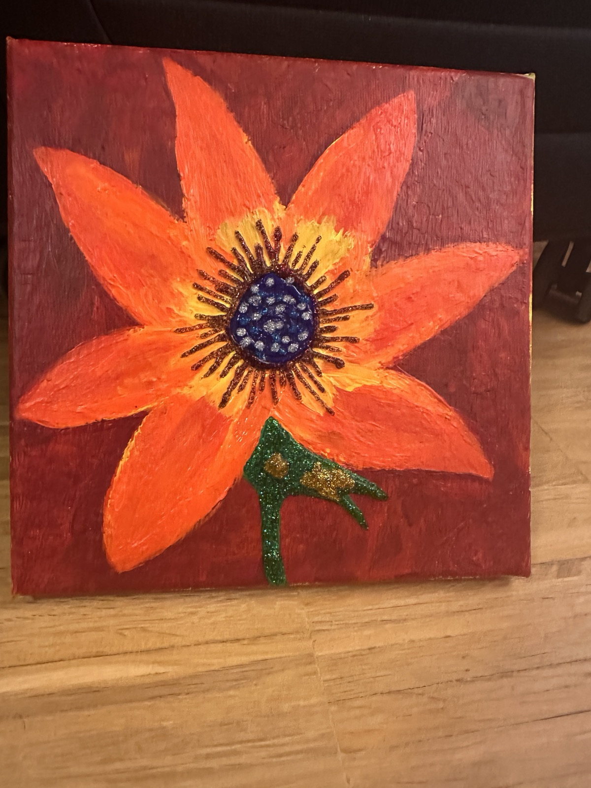
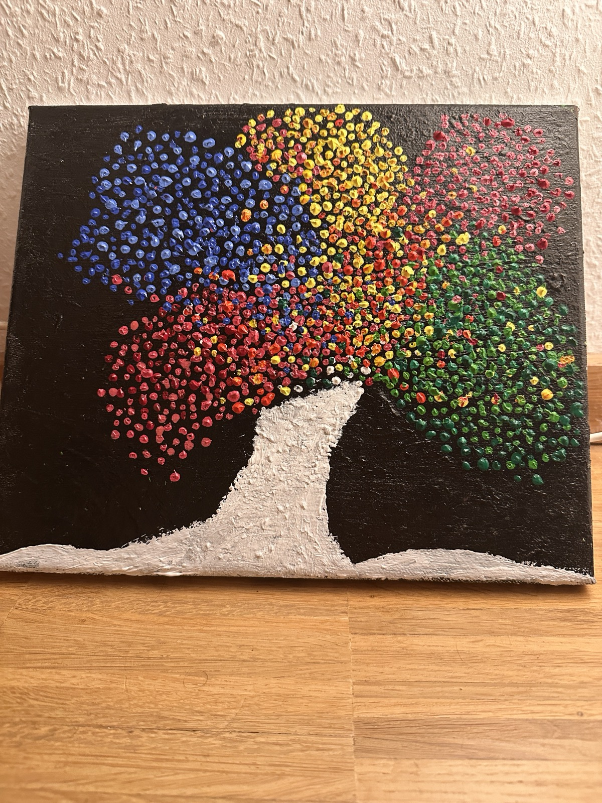

I design and build end-to-end applications — from scalable backend systems and APIs to intelligent AI agents and ML pipelines. Passionate about transforming complex workflows into reliable, production-ready solutions that deliver real business impact.
Europe’s leading applied research institute for solar energy systems.
Global professional services firm focused on cloud, data and AI.
Here are some projects where I built AI systems, automation pipelines and production-ready applications.
The following letters highlight my technical skills, research ability, and professional work ethic through feedback from supervisors and collaborators.
Apart from building AI systems and software, I enjoy painting. It helps me stay creative, patient and observant — qualities that also influence how I approach problem solving and design.
 